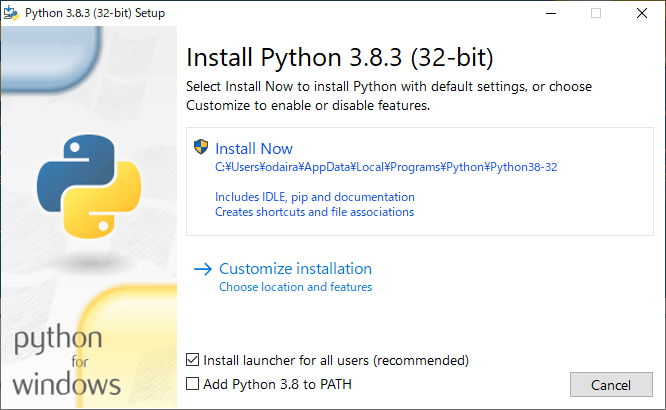
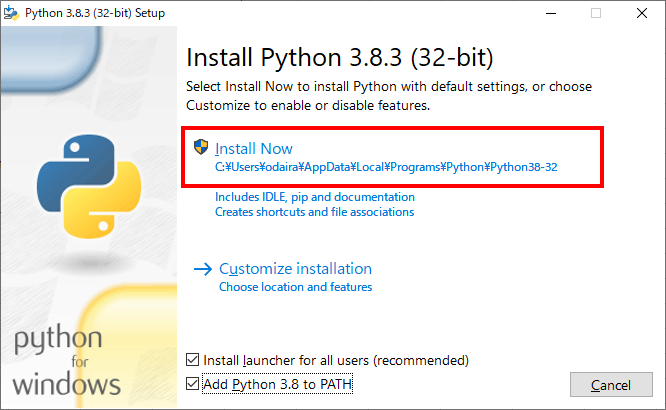
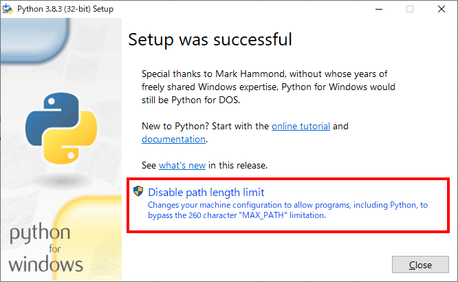
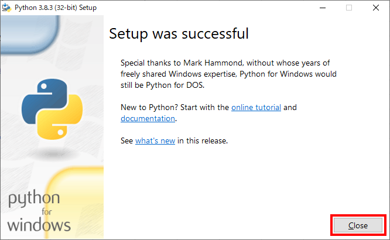

インストール¶
Pythonのインストール¶
インストール¶
インストーラを起動します.
「Add Python 3.8 to PATH」にチェックを入れます.

「Install Now」をクリックします.
「Disable path length limit」をクリックします.
「Close」をクリックし, インストーラを閉じます.

Sphinxのインストール¶
動作確認¶
コマンドプロンプトを起動し, 以下のコマンドを実行し, バージョンが表示されればインストール成功です.
C:\>sphinx-quickstart --version
sphinx-quickstart 3.1.1
Make of Windowsのインストール¶
インストール¶
インストーラを起動し, デフォルト設定のままインストールします.
システム環境変数
Pathに,C:\Program Files (x86)\GnuWin32\binを追加します.
動作確認¶
コマンドプロンプトを起動し, 以下のコマンドを実行し, バージョンが表示されればインストール成功です.
C:\>make -version
GNU Make 3.81
Copyright (C) 2006 Free Software Foundation, Inc.
これはフリーソフトウェアです. 利用許諾についてはソースを
ご覧ください.
商業性や特定の目的への適合性の如何に関わらず, 無保証です.
TeX Liveのインストール¶
動作確認¶
コマンドプロンプトを起動し, 以下のコマンドを実行し, バージョンが表示されればインストール成功です.
C:\>platex -version
e-pTeX 3.14159265-p3.8.3-191112-2.6 (utf8.sjis) (TeX Live 2020/W32TeX)
kpathsea version 6.3.2
ptexenc version 1.3.8
Copyright 2020 D.E. Knuth.
There is NO warranty. Redistribution of this software is
covered by the terms of both the e-pTeX copyright and
the Lesser GNU General Public License.
For more information about these matters, see the file
named COPYING and the e-pTeX source.
Primary author of e-pTeX: Peter Breitenlohner.